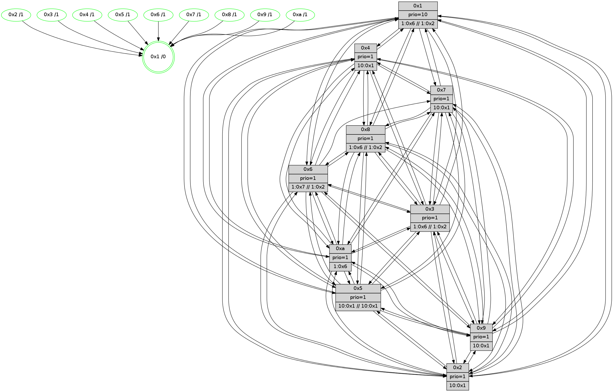

>> << IDX [start] -100 -25 -5 +0 +5 +25 +100 [570.247291088]
 Previous packets
----------------------------------------------------------------------
565.518506 beacon01(faad) #0 coord=01,02,03,04,05,06,07,0a,09,08 cycle=688.0ms assoc
-- color-indic=1 64 0f b4
565.528488 beacon02(faad) #0 coord=01,02,03,04,05,06,07,0a,09,08 cycle=688.0ms assoc 64 9c 85
565.538488 beacon03(faad) #0 coord=01,02,03,04,05,06,07,0a,09,08 cycle=688.0ms assoc 64 e6 c8
565.548488 beacon04(faad) #0 coord=01,02,03,04,05,06,07,0a,09,08 cycle=688.0ms assoc 64 91 22
565.558490 beacon05(faad) #0 coord=01,02,03,04,05,06,07,0a,09,08 cycle=688.0ms assoc 64 eb 6f
565.568490 beacon06(faad) #0 coord=01,02,03,04,05,06,07,0a,09,08 cycle=688.0ms assoc 64 65 b8
565.578489 beacon07(faad) #0 coord=01,02,03,04,05,06,07,0a,09,08 cycle=688.0ms assoc 64 1f f5
565.588493 beacon0a(faad) #0 coord=01,02,03,04,05,06,07,0a,09,08 cycle=688.0ms assoc 64 6e fe
565.598494 beacon09(faad) #0 coord=01,02,03,04,05,06,07,0a,09,08 cycle=688.0ms assoc 64 e0 29
565.608495 beacon08(faad) #0 coord=01,02,03,04,05,06,07,0a,09,08 cycle=688.0ms assoc 64 9a 64
565.619970 [Hello(8): seq=307 sym=5,2,3,4,7,6,9,10,1 sysInfo=coloring-mode-on,ColoringModeIndicationCalled stat=5:0,10,10,5/2:3,3,1,0/3:7,5,7,6/4:13,11,12,5/7:0,6,12,4/6:7,2,11,4/9:0,10,11,4/10:14,13,7,4/1:11,10,5,0]
565.622974 [Hello(3): seq=364 sym=1,7,6,2,4,8,9,10,5 sysInfo=coloring-mode-on,ColoringModeIndicationCalled stat=1:0,10,3,0/7:5,10,9,3/6:12,12,8,4/2:13,9,11,6/4:0,10,11,4/8:12,11,6,0/9:3,11,14,5/10:15,11,6,2/5:2,11,11,5]
565.625510 [Hello(5): seq=364 sym=7,6,4,3,1,9,8,10,2 sysInfo= stat=7:4,11,13,3/6:6,2,12,3/4:10,11,8,3/3:9,2,1,1/1:3,7,2,0/9:9,11,9,3/8:10,3,5,2/10:8,2,8,3/2:9,10,9,3]
565.628081 [STC(2)->1 #0.28 tree-change,inconsistent-stability,stable,to-color d=1]
565.630371 [STC(5)->1 #0.28 tree-change,inconsistent-stability,stable,to-color d=1]
565.632003 [Hello(10): seq=296 sym=6,2,3,8,9,5,7,4,1 sysInfo= stat=6:7,14,11,3/2:5,3,2,0/3:5,3,2,0/8:7,8,11,3/9:5,10,9,3/5:12,12,8,5/7:5,10,10,2/4:8,11,8,6/1:10,7,3,0]
565.635053 [STC(8)->1 #0.28 tree-change,inconsistent-stability,stable,to-color d=1]
565.637017 [Color(2) seq=21 @0:0 prio=1 >10.@1,1.@4,1.@6,1.@7]
565.638637 [Color(1) seq=44 @0:0 prio=10 >1.@6,1.@7,1.@8,1.@9 >>1.@2,1.@3,1.@4]
565.642145 [Hello(9): seq=307 sym=5,2,3,4,7,6,8,10,1 sysInfo=hasWarning stat=5:13,13,8,6/2:8,12,12,4/3:15,14,5,3/4:1,10,9,4/7:8,9,11,2/6:15,15,9,3/8:14,12,7,1/10:11,0,8,4/1:12,7,4,0]
565.644859 [Hello(4): seq=364 sym=5,7,6,2,3,9,8,10,1 sysInfo= stat=5:4,0,9,6/7:8,13,10,2/6:13,3,11,4/2:15,11,9,5/3:6,13,0,1/9:3,15,7,3/8:12,11,12,4/10:2,3,9,3/1:0,8,6,0]
565.647642 [STC(9)->1 #0.28 tree-change,inconsistent-stability,stable,to-color d=1]
565.649268 [STC(4)->1 #0.28 tree-change,inconsistent-stability,stable,to-color d=1]
565.652640 [STC(3)->1 #0.28 tree-change,inconsistent-stability,stable,to-color d=1]
565.654110 [STC(10)->1 #0.28 tree-change,inconsistent-stability,stable,to-color d=1]
565.656375 [TreeStatus(10)-.->1 #0.28 tree-change,inconsistent-stability,stable child=1]
----------------------------------------------------------------------
566.306637 beacon01(faad) #0 coord=01,02,03,04,05,06,07,0a,09,08 cycle=688.0ms assoc
-- color-indic=1 64 8a 0a
566.316620 beacon02(faad) #0 coord=01,02,03,04,05,06,07,0a,09,08 cycle=688.0ms assoc 64 19 3b
566.326620 beacon03(faad) #0 coord=01,02,03,04,05,06,07,0a,09,08 cycle=688.0ms assoc 64 63 76
566.336620 beacon04(faad) #0 coord=01,02,03,04,05,06,07,0a,09,08 cycle=688.0ms assoc 64 14 9c
566.346621 beacon05(faad) #0 coord=01,02,03,04,05,06,07,0a,09,08 cycle=688.0ms assoc 64 6e d1
566.356619 beacon06(faad) #0 coord=01,02,03,04,05,06,07,0a,09,08 cycle=688.0ms assoc 64 e0 06
566.366622 beacon07(faad) #0 coord=01,02,03,04,05,06,07,0a,09,08 cycle=688.0ms assoc 64 9a 4b
566.376627 beacon0a(faad) #0 coord=01,02,03,04,05,06,07,0a,09,08 cycle=688.0ms assoc 64 eb 40
566.386626 beacon09(faad) #0 coord=01,02,03,04,05,06,07,0a,09,08 cycle=688.0ms assoc 64 65 97
566.396628 beacon08(faad) #0 coord=01,02,03,04,05,06,07,0a,09,08 cycle=688.0ms assoc 64 1f da
566.408491 [Hello(2): seq=361 sym=4,5,7,6,3,9,8,10,1 sysInfo=hasWarning stat=4:14,11,10,2/5:0,14,8,4/7:5,14,11,3/6:9,3,12,3/3:10,10,3,1/9:4,11,8,1/8:11,3,5,1/10:2,2,6,3/1:0,8,3,0]
566.411213 [Color(5) seq=28 @0:0 prio=1 >10.@1,1.@4,1.@6,1.@7]
566.412936 [Hello(1): seq=273 sym=4,2,9,5,10,3,8,6,7 sysInfo=coloring-mode-on,ColoringModeRequestCalled stat=4:7,14,15,6/2:6,14,14,6/9:0,4,2,6/5:15,4,13,7/10:8,12,15,5/3:6,1,1,7/8:6,15,3,4/6:11,5,0,3/7:4,13,1,6]
566.415501 [Color(10) seq=33 @0:0 prio=1 >1.@6,1.@7,1.@8,1.@9]
566.418522 [Color(8) seq=44 @0:0 prio=1 >1.@6,1.@7,1.@9,1.@a >>1.@2,1.@3,1.@4]
566.422068 [Hello(6): seq=364 sym=2,3,5,4,7,9,8,10,1 sysInfo=coloring-mode-on,ColoringModeIndicationCalled stat=2:10,10,0,4/3:11,14,12,4/5:14,11,13,7/4:11,9,13,5/7:10,5,11,2/9:11,11,14,6/8:10,11,12,3/10:12,11,15,5/1:11,8,0,0]
566.425183 [Color(3) seq=44 @0:0 prio=1 >1.@6,1.@7,1.@8,1.@9 >>1.@2,1.@3,1.@4]
566.427129 [Color(6) seq=44 @0:0 prio=1 >1.@7,1.@8,1.@9,1.@a >>1.@2,1.@3,1.@4]
566.430307 [Color(7) seq=32 @0:0 prio=1]
566.438962 [Color(4) seq=19 @0:0 prio=1 >10.@1,1.@2,1.@3,1.@5]
----------------------------------------------------------------------
567.094769 beacon01(faad) #0 coord=01,02,03,04,05,06,07,0a,09,08 cycle=688.0ms assoc
-- color-indic=1 64 36 0f
567.104752 beacon02(faad) #0 coord=01,02,03,04,05,06,07,0a,09,08 cycle=688.0ms assoc 64 a5 3e
567.114751 beacon03(faad) #0 coord=01,02,03,04,05,06,07,0a,09,08 cycle=688.0ms assoc 64 df 73
567.124753 beacon04(faad) #0 coord=01,02,03,04,05,06,07,0a,09,08 cycle=688.0ms assoc 64 a8 99
567.134751 beacon05(faad) #0 coord=01,02,03,04,05,06,07,0a,09,08 cycle=688.0ms assoc 64 d2 d4
567.144754 beacon06(faad) #0 coord=01,02,03,04,05,06,07,0a,09,08 cycle=688.0ms assoc 64 5c 03
567.154754 beacon07(faad) #0 coord=01,02,03,04,05,06,07,0a,09,08 cycle=688.0ms assoc 64 26 4e
567.164756 beacon0a(faad) #0 coord=01,02,03,04,05,06,07,0a,09,08 cycle=688.0ms assoc 64 57 45
567.174757 beacon09(faad) #0 coord=01,02,03,04,05,06,07,0a,09,08 cycle=688.0ms assoc 64 d9 92
567.184758 beacon08(faad) #0 coord=01,02,03,04,05,06,07,0a,09,08 cycle=688.0ms assoc 64 a3 df
567.195997 [Hello(10): seq=297 sym=6,2,3,8,9,5,7,4,1 sysInfo= stat=6:8,15,11,3/2:6,3,2,0/3:5,4,2,0/8:7,9,11,3/9:5,10,9,3/5:12,12,8,5/7:5,11,10,2/4:8,12,8,6/1:10,7,3,0]
567.198675 [Hello(9): seq=308 sym=5,2,3,4,7,6,8,10,1 sysInfo=hasWarning stat=5:13,13,8,6/2:9,12,12,4/3:15,14,6,3/4:1,11,10,4/7:8,9,11,2/6:15,15,9,3/8:14,12,7,1/10:11,0,9,5/1:12,7,4,0]
567.201557 [Hello(5): seq=365 sym=7,6,4,3,1,9,8,10,2 sysInfo= stat=7:4,11,13,3/6:7,3,12,3/4:11,12,9,3/3:9,3,2,1/1:4,8,2,0/9:10,12,10,3/8:10,4,6,2/10:9,3,9,4/2:10,11,9,3]
567.207100 [Hello(4): seq=365 sym=5,7,6,2,3,9,8,10,1 sysInfo= stat=5:4,0,9,6/7:8,13,10,2/6:13,3,11,4/2:0,11,9,5/3:6,13,1,1/9:3,15,7,3/8:12,11,12,4/10:2,3,10,4/1:0,8,6,0]
567.210462 [Hello(8): seq=308 sym=5,2,3,4,7,6,9,10,1 sysInfo=coloring-mode-on,ColoringModeIndicationCalled stat=5:0,10,10,5/2:4,4,1,0/3:7,6,8,6/4:14,12,13,5/7:0,7,12,4/6:8,3,11,4/9:1,10,12,4/10:14,13,8,5/1:11,11,5,0]
567.212926 [Hello(3): seq=365 sym=1,7,6,2,4,8,9,10,5 sysInfo=coloring-mode-on,ColoringModeIndicationCalled stat=1:0,10,3,0/7:5,11,9,3/6:12,13,8,4/2:14,9,11,6/4:0,11,11,4/8:12,11,6,0/9:3,11,14,5/10:15,11,7,3/5:2,11,11,5]
567.217443 [Color(2) seq=22 @0:0 prio=1 >10.@1,1.@4,1.@6,1.@7]
567.219993 [Color(1) seq=45 @0:0 prio=10 >1.@6,1.@7,1.@8,1.@9 >>1.@2,1.@3,1.@4]
----------------------------------------------------------------------
567.882898 beacon01(faad) #0 coord=01,02,03,04,05,06,07,0a,09,08 cycle=688.0ms assoc
-- color-indic=1 64 f2 01
567.892880 beacon02(faad) #0 coord=01,02,03,04,05,06,07,0a,09,08 cycle=688.0ms assoc 64 61 30
567.902880 beacon03(faad) #0 coord=01,02,03,04,05,06,07,0a,09,08 cycle=688.0ms assoc 64 1b 7d
567.912882 beacon04(faad) #0 coord=01,02,03,04,05,06,07,0a,09,08 cycle=688.0ms assoc 64 6c 97
567.922882 beacon05(faad) #0 coord=01,02,03,04,05,06,07,0a,09,08 cycle=688.0ms assoc 64 16 da
567.932881 beacon06(faad) #0 coord=01,02,03,04,05,06,07,0a,09,08 cycle=688.0ms assoc 64 98 0d
567.942881 beacon07(faad) #0 coord=01,02,03,04,05,06,07,0a,09,08 cycle=688.0ms assoc 64 e2 40
567.952888 beacon0a(faad) #0 coord=01,02,03,04,05,06,07,0a,09,08 cycle=688.0ms assoc 64 93 4b
567.962889 beacon09(faad) #0 coord=01,02,03,04,05,06,07,0a,09,08 cycle=688.0ms assoc 64 1d 9c
567.972888 beacon08(faad) #0 coord=01,02,03,04,05,06,07,0a,09,08 cycle=688.0ms assoc 64 67 d1
567.985710 [Hello(2): seq=362 sym=4,5,7,6,3,9,8,10,1 sysInfo=hasWarning stat=4:14,12,10,2/5:0,15,8,4/7:6,15,11,3/6:10,4,12,3/3:10,11,3,1/9:4,11,8,1/8:11,4,5,1/10:3,2,6,3/1:1,9,3,0]
567.988442 [Color(5) seq=29 @0:0 prio=1 >10.@1,1.@4,1.@6,1.@7]
567.991125 [Hello(6): seq=365 sym=2,3,5,4,7,9,8,10,1 sysInfo=coloring-mode-on,ColoringModeIndicationCalled stat=2:11,11,0,4/3:12,14,12,4/5:15,11,13,7/4:12,10,13,5/7:10,6,11,2/9:12,11,14,6/8:11,11,12,3/10:13,11,15,5/1:11,9,0,0]
567.993712 [Color(3) seq=45 @0:0 prio=1 >1.@6,1.@7,1.@8,1.@9 >>1.@2,1.@3,1.@4]
567.996313 [Color(6) seq=45 @0:0 prio=1 >1.@7,1.@8,1.@9,1.@a >>1.@2,1.@3,1.@4]
567.999250 [Hello(7): seq=365 sym=2,3,5,4,8,9,10,1 sysInfo= stat=2:15,5,15,7/3:7,12,12,6/5:9,6,13,8/4:1,4,14,5/8:8,1,14,2/9:6,6,14,7/10:10,8,13,5/1:10,6,1,0]
568.001935 [Color(7) seq=33 @0:0 prio=1 >10.@1,1.@4,1.@6,1.@8]
568.005085 [Color(10) seq=34 @0:0 prio=1 >1.@6,1.@7,1.@8,1.@9]
568.009439 [Color(4) seq=20 @0:0 prio=1 >10.@1,1.@2,1.@3,1.@5]
568.012013 [Color(9) seq=29 @0:0 prio=1 >10.@1,1.@4,1.@6,1.@7]
----------------------------------------------------------------------
568.671029 beacon01(faad) #0 coord=01,02,03,04,05,06,07,0a,09,08 cycle=688.0ms assoc
-- color-indic=1 64 4e 04
568.681010 beacon02(faad) #0 coord=01,02,03,04,05,06,07,0a,09,08 cycle=688.0ms assoc 64 dd 35
568.691011 beacon03(faad) #0 coord=01,02,03,04,05,06,07,0a,09,08 cycle=688.0ms assoc 64 a7 78
568.701012 beacon04(faad) #0 coord=01,02,03,04,05,06,07,0a,09,08 cycle=688.0ms assoc 64 d0 92
568.711012 beacon05(faad) #0 coord=01,02,03,04,05,06,07,0a,09,08 cycle=688.0ms assoc 64 aa df
568.721013 beacon06(faad) #0 coord=01,02,03,04,05,06,07,0a,09,08 cycle=688.0ms assoc 64 24 08
568.731011 beacon07(faad) #0 coord=01,02,03,04,05,06,07,0a,09,08 cycle=688.0ms assoc 64 5e 45
568.741016 beacon0a(faad) #0 coord=01,02,03,04,05,06,07,0a,09,08 cycle=688.0ms assoc 64 2f 4e
568.751017 beacon09(faad) #0 coord=01,02,03,04,05,06,07,0a,09,08 cycle=688.0ms assoc 64 a1 99
568.761016 beacon08(faad) #0 coord=01,02,03,04,05,06,07,0a,09,08 cycle=688.0ms assoc 64 db d4
568.777793 [Hello(5): seq=366 sym=7,6,4,3,1,9,8,10,2 sysInfo= stat=7:5,12,13,3/6:8,4,12,3/4:12,13,9,3/3:10,3,2,1/1:4,9,2,0/9:10,13,10,3/8:11,5,6,2/10:9,4,9,4/2:11,12,9,3]
568.780506 [Hello(10): seq=298 sym=6,2,3,8,9,5,7,4,1 sysInfo= stat=6:8,15,11,3/2:6,4,2,0/3:6,4,2,0/8:8,9,11,3/9:6,11,9,3/5:13,12,8,5/7:5,11,10,2/4:9,13,8,6/1:11,8,3,0]
568.784660 [Hello(3): seq=366 sym=1,7,6,2,4,8,9,10,5 sysInfo=coloring-mode-on,ColoringModeIndicationCalled stat=1:1,11,3,0/7:6,12,9,3/6:12,14,8,4/2:14,10,11,6/4:0,12,11,4/8:12,11,6,0/9:3,12,14,5/10:15,12,7,3/5:2,11,11,5]
568.787472 [STC(1) #0.29 tree-change,inconsistent-stability,stable,to-color d=0]
568.790691 [Color(1) seq=46 @0:0 prio=10 >1.@6,1.@7,1.@8,1.@9 >>1.@2,1.@3,1.@4]
----------------------------------------------------------------------
569.459160 beacon01(faad) #0 coord=01,02,03,04,05,06,07,0a,09,08 cycle=688.0ms assoc
-- color-indic=1 64 7a 1c
569.469143 beacon02(faad) #0 coord=01,02,03,04,05,06,07,0a,09,08 cycle=688.0ms assoc 64 e9 2d
569.479143 beacon03(faad) #0 coord=01,02,03,04,05,06,07,0a,09,08 cycle=688.0ms assoc 64 93 60
569.489142 beacon04(faad) #0 coord=01,02,03,04,05,06,07,0a,09,08 cycle=688.0ms assoc 64 e4 8a
569.499146 beacon05(faad) #0 coord=01,02,03,04,05,06,07,0a,09,08 cycle=688.0ms assoc 64 9e c7
569.509143 beacon06(faad) #0 coord=01,02,03,04,05,06,07,0a,09,08 cycle=688.0ms assoc 64 10 10
569.519144 beacon07(faad) #0 coord=01,02,03,04,05,06,07,0a,09,08 cycle=688.0ms assoc 64 6a 5d
569.529149 beacon0a(faad) #0 coord=01,02,03,04,05,06,07,0a,09,08 cycle=688.0ms assoc 64 1b 56
569.539148 beacon09(faad) #0 coord=01,02,03,04,05,06,07,0a,09,08 cycle=688.0ms assoc 64 95 81
569.549150 beacon08(faad) #0 coord=01,02,03,04,05,06,07,0a,09,08 cycle=688.0ms assoc 64 ef cc
569.562297 [Hello(1): seq=275 sym=4,2,9,5,10,3,8,6,7 sysInfo=coloring-mode-on,ColoringModeRequestCalled stat=4:7,0,15,6/2:6,14,14,6/9:0,5,2,6/5:15,5,13,7/10:9,14,15,5/3:6,3,1,7/8:7,0,3,4/6:13,7,0,3/7:5,15,1,6]
569.565019 [STC(5)->1 #0.29 tree-change,inconsistent-stability,stable,to-color d=1]
569.566620 [STC(4)->1 #0.29 tree-change,inconsistent-stability,stable,to-color d=1]
569.568270 [Color(5) seq=30 @0:0 prio=1 >10.@1,1.@4,1.@6,1.@7 >>10.@1,1.@2,1.@3]
569.570407 [STC(10)->1 #0.29 tree-change,inconsistent-stability,stable,to-color d=1]
569.572861 [Color(4) seq=21 @0:0 prio=1 >10.@1,1.@2,1.@3,1.@5]
569.574561 [Hello(7): seq=366 sym=2,3,5,4,8,9,10,1 sysInfo= stat=2:0,6,15,7/3:8,12,12,6/5:10,6,13,8/4:1,5,14,5/8:9,1,14,2/9:6,7,14,7/10:11,9,13,5/1:10,7,2,0]
569.577905 [STC(7)->1 #0.29 tree-change,inconsistent-stability,stable,to-color d=1]
569.579171 [STC(3)->1 #0.29 tree-change,inconsistent-stability,stable,to-color d=1]
569.580481 [Hello(6): seq=366 sym=2,3,5,4,7,9,8,10,1 sysInfo=coloring-mode-on,ColoringModeIndicationCalled stat=2:12,12,0,4/3:13,14,12,4/5:0,11,13,7/4:12,11,13,5/7:11,7,11,2/9:12,12,14,6/8:12,11,12,3/10:14,12,15,5/1:11,10,1,0]
569.583603 [STC(6)->1 #0.29 tree-change,inconsistent-stability,stable,to-color d=1]
569.584946 [STC(9)->1 #0.29 tree-change,inconsistent-stability,stable,to-color d=1]
569.586199 [Color(7) seq=34 @0:0 prio=1 >10.@1,1.@4,1.@6,1.@8]
569.588785 [STC(8)->1 #0.29 tree-change,inconsistent-stability,stable,to-color d=1]
569.590120 [Color(9) seq=30 @0:0 prio=1 >10.@1,1.@4,1.@6,1.@7]
569.592740 [Color(10) seq=35 @0:0 prio=1 >1.@6,1.@7,1.@8,1.@9]
569.594592 [Color(6) seq=46 @0:0 prio=1 >1.@7,1.@8,1.@9,1.@a >>1.@2,1.@3,1.@4]
569.597331 [Hello(2): seq=363 sym=4,5,7,6,3,9,8,10,1 sysInfo=hasWarning stat=4:15,13,10,2/5:1,0,8,4/7:7,0,11,3/6:11,5,12,3/3:11,12,3,1/9:4,12,8,1/8:11,4,5,1/10:4,3,6,3/1:1,10,4,0]
569.600561 [TreeStatus(3)-.->1 #0.29 tree-change,inconsistent-stability,stable child=1]
569.602199 [STC(2)->1 #0.29 tree-change,inconsistent-stability,stable,to-color d=1]
569.607008 [Color(3) seq=46 @0:0 prio=1 >1.@6,1.@7,1.@8,1.@9 >>1.@2,1.@3,1.@4]
569.609836 [Color(8) seq=46 @0:0 prio=1 >1.@6,1.@7,1.@9,1.@a >>1.@2,1.@3,1.@4]